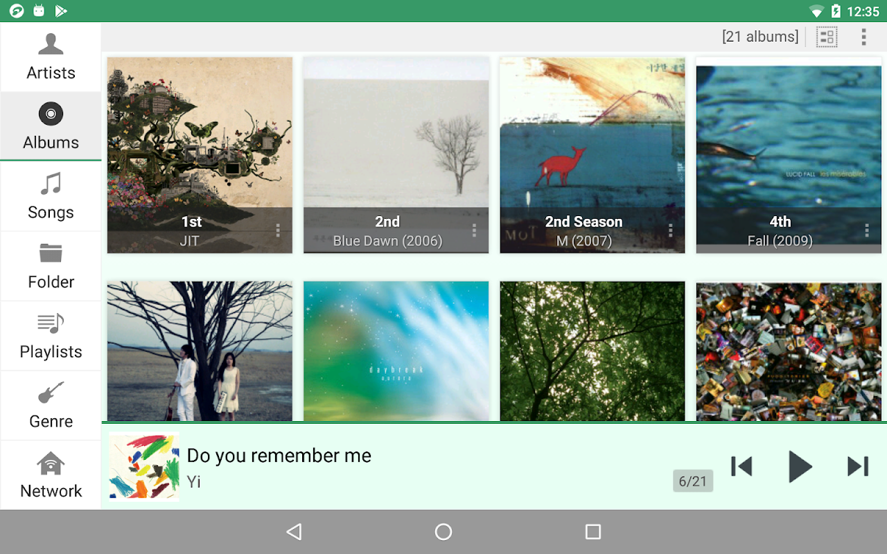

jetAudio 藏得最深的 5 个功能，用了三年才翻出来
大多数人把 jetAudio 当普通本地播放器用，其实它在 MIDI 合成、DSD 直出、EQ 预设保存这些偏门角落藏了不少狠货。
你以为 jetAudio 就是jetAudio官网上那个界面好看的本地音乐播放器？点开就能播 FLAC，EQ 有一堆预设，设置项翻翻也就那样。我当初也是这么想的——直到某天整理硬盘翻出一堆老游戏 MIDI 文件，随手拖进去居然响了，而且音色一点不像系统合成器那种电子音。那时候才反应过来：这个东西藏得真深。
下面说的这五个功能，没有一个是首页能看到的，甚至不少在设置里要翻三四层菜单才能摸到。但摸到之后，要么解了我某个长期的小痛点，要么纯粹是"卧槽原来还能这样"的惊喜。
一、内建 MIDI WaveTable 合成器——Android 上极少数能原生播 MIDI 的播放器
MIDI 文件本身不带音频数据，只是一串"第几拍弹哪个音、力度多少"的指令。要出声必须有个合成器把这些指令翻译成声音。早年声卡上有硬件合成器，Windows 自带一个软合成器，Android 原生啥都没有——这也是为什么你把 .mid 文件丢进大多数手机播放器，要么直接跳过，要么弹个框说不支持。
jetAudio Plus 版（可从jetAudio下载获取）内建了一个叫 jetAudio WaveTable 的合成引擎，用自研的采样音色库覆盖了 GM（通用 MIDI）标准的 128 种乐器加打击乐组。我那堆老 PC 游戏 OST（90 年代《仙剑奇侠传》《金庸群侠传》的背景音）拖进去直接响，钢琴是钢琴的音色，笛子是笛子的音色，不是那种干瘪的方波合成音。
藏得有多深？你甚至找不到一个叫"MIDI 播放"的设置开关——把 .mid 文件放到音乐文件夹里，jetAudio 扫描时会自动识别，跟 FLAC、MP3 一样正常出现在歌单里。完全不需要任何配置。
局限也有：不支持 SysEx 系统独占指令（部分专业合成器的音色切换会被忽略），不支持自定义 SoundFont（.sf2 音色包——最大的遗憾，要是能换音色那就真无敌了），.kar 卡拉 OK MIDI 和 .rmi 老 Windows 容器不识别。但对于我这种"想在手机上听听老游戏 OST"的需求，完全够用。专业 MIDI 制作还是得上电脑 FL Studio、Cubase 加 VSTi。

二、DSD Direct 原生比特流输出——但你得先有个真支持 DSD 的 USB-DAC
第二个让我意外的是 DSD 支持。jetAudio Plus 版从 12.3 起支持 DSF 和 DFF 两种 DSD 容器格式。但默认情况下，DSD 文件会被重采样成 PCM 96kHz / 24bit 播放——因为 Android 的 AAudio API 只接受 PCM，无法直接输出原生 DSD 比特流。
重点来了：设置 → 播放 → DSD Output 里有三个选项，默认是 PCM 96kHz，还有 PCM 192kHz，最底下那个叫 DSD Direct。选了之后，jetAudio 会尝试把 DSD 文件的原生比特流直接通过 USB 推给 DAC——绕过 Android 的 PCM 转换层。
但这玩意儿有门槛：
- 必须是原生支持 DSD 解码的 USB-DAC（500 元以上的基本都支持，iFi、Topping、Element 这些牌子的型号大概率 OK）
- 用 USB-OTG 把 DAC 接手机
- jetAudio 检测到 DAC 接入后，DSD Direct 选项才会真正生效——如果设备不支持，它会自动回退到 PCM 转换，不会报错
如果只是用手机内置 DAC 或者蓝牙耳机，DSD Direct 点了也白点——手机内置 DAC 无一例外都是 PCM DAC，根本处理不了 DSD 信号。PCM 192kHz 转换已经是最优方案。
藏得深的地方在于：没有 USB-DAC 接入时，这个选项你甚至可能注意不到它的存在——它不会灰掉，也不会提示你需要硬件支持，就静静躺在那里等你点。我也是翻了好几个设置面板才找到，后来去jetAudio文档对了一下才确认没看错。
三、EQ 预设可以自定义保存——32 种官方预设之外，打造自己的听音曲线
jetAudio 官方给了 32 种 EQ 预设，Rock、Pop、Jazz、Classical、Bass Boost 这些常见的都有。但最实用的其实不是这些官方预设，而是自定义保存。
10 段和 20 段图形均衡器可以手动拖动每个频段的增益滑块（-12dB 到 +12dB）。调完之后别直接退出——点一下均衡器面板右上角的菜单（三个点），里面有个"保存为预设"的选项。取个名字比如"我耳机的低频补偿"，下次换耳机之前直接调用就行，不用重新拖滑块。
我自己存了三四个：一个给入耳式（中频稍微抬一点补人声）、一个给头戴式（高频拉低防刺耳）、一个给老耳机（低频补厚一点）。每次换耳机切一下，比调音量靠谱多了。
官方预设的默认逻辑是"一键套用覆盖当前曲线"，不会提示你要不要保存当前调过的。建议每次调完有满意效果就存一下——不存的话切个预设就没了，这点真的很容易忘。
四、Album Artist 字段默认隐藏——合辑散架的根因找到了
标签编辑器里有个叫 Album Artist（专辑艺术家）的字段，jetAudio 默认把它藏起来了。这导致我之前整理合辑专辑时，同一专辑的歌曲在艺术家视图下散得到处都是——因为我只填了 Artist（单曲演唱者），没填 Album Artist。
举个例子：一张《经典华语合辑》里 15 首歌，演唱者分别是周杰伦、林俊杰、五月天……Artist 字段每首歌填不同的人，但 Album Artist 统一填"Various Artists"——这样 jetAudio 才能把它们聚在同一张专辑下。如果只填 Artist，这 15 首歌就会分散到 15 个不同艺术家的文件夹里，合辑直接"散架"。
怎么把它调出来？打开任何一首歌的标签编辑器 → 右上角菜单 → 显示全部字段。Album Artist 就在里面，手动填完保存即可。批量处理的话用电脑端的 MusicBrainz Picard 或 MP3tag 更高效，但单首歌修补 jetAudio 自带的编辑器够用。
五、Last.fm 自动封面下载——扫描时顺手搞定，还能手动修正
jetAudio 扫描本地音乐文件夹时，会按三层优先级自动获取专辑封面：文件内嵌的 APIC 帧 > 目录下的 cover.jpg/folder.jpg > 自动从 Last.fm 下载。
这个 Last.fm 自动下载的开关藏在：设置 → 音乐文件夹 → 自动下载封面（Auto Download Album Art）。默认是开着的，但需要给 jetAudio 互联网权限（Android 6.0+ 首次启动会弹权限请求）。
有时候封面下载不到，多半是这几个原因：
- 艺术家或专辑标签拼写不规范（Last.fm 要求标准名称，比如"The Beatles"而不是"Beatles"、名字里有没有空格都要对）
- Android 10+ 的分区存储 + 数据节省模式可能挡住了网络请求
- Last.fm 上该专辑本身就没封面（极罕见）
封面下载不到也不怕——Plus 版标签编辑器里，封面位置可以直接从本地图库选一张嵌进去，内嵌封面的优先级最高，下次扫描不会被覆盖。
一个坑：DDS Direct 选错了不会报错，只会悄悄回退
最后提一个踩过的坑：DSD Direct 选错硬件（比如用蓝牙耳机时忘了切回来），jetAudio 不会弹任何提示，只会悄悄回退到 PCM 转换。听感上没区别，但你以为在听原生 DSD 其实不是。建议每次接完 DAC 确认一下设置里的 DSD Output 选项——不要等拔掉 DAC 了才发现。
把它用透
这五个功能里，MIDI 播放和 Album Artist 是真刚需——一个解决了我老游戏 OST 没播放器能播的问题，一个解决了合辑整理的痛点。DSD Direct、自定义 EQ 预设、Last.fm 封面下载是用了就爽的提升，没它们也能听歌，但有了之后体验上一个台阶。
jetAudio 不是那种"功能全都堆首页让你一眼看到"的播放器——它更像一把瑞士军刀，常用的那几个刀头露在外面，偏门的小工具都藏在夹层里。翻不翻得到，全看你愿不愿意多点几个菜单。这套关于 jetAudio 的隐藏功能整理，GitHub、Gitee、GitCode三处都存了一份，国内国外访问都方便。